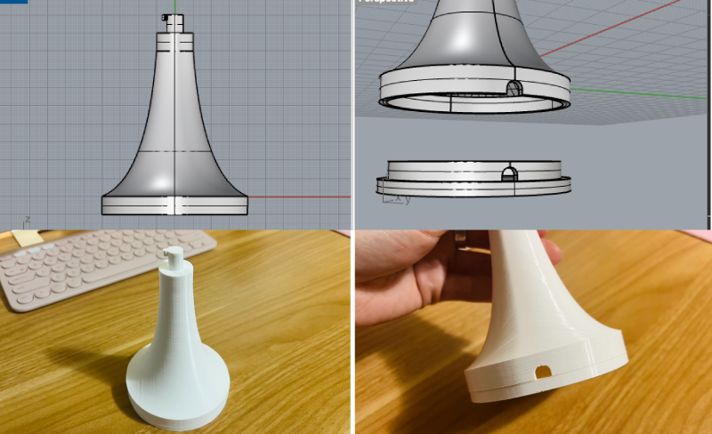

Concept
I was inspired by the images of a propagation station and acrylic art I found during brainstorming, I decided to design my own propagation station using 3D printer and acrylic sheet. Wnen I proposed my design idea in the class, I got a feedback on the stem design suggesting that it could be more robust if the stem is one piece instead of breaking it down into multiple layers to hold each petal. Taking that advice, I decided to design 2 different types of a propagation station.
Source Files
Bill of Materials
| Items | Details | Price | Source |
|---|---|---|---|
| Test Tubes | Clear test tubes (9pc) | $9.99 | Amazon |
| Acrylic Sheets | 6 pack 8x12 inch colored cast acrylic sheet. 1/8" thick, translucent | $29.98 | Amazon |
| String lights | String Lights,Waterproof LED String Lights,10Ft/30 LEDs Fairy String Lights Starry, Battery Operated String Lights. (Warm White) | $6.39 | Amazon |
Idea Sketching

Idea sketching
The propagation station is going to look like stairs. Each little plate that holds a test tube will be a flower petal shape, and I'm going to lazer cut a acrylic sheet to create this shape. There are 6 flower petals and each petal holds one test tube.

Top & bottom view
When you see this propagation station from the top, it will look like a flower. The shape of the base is also going to be a flower shape as well. I I'm going to create it with a 3D printer.
How stem works
It is important to make sure that the stem is stable and the acrylic flower petals can hold test tubes filled with water without tilting. I decided to create Lego inspired round bricks to hold each acrylic plate tight.
Prototyping
Hand-cut cardboard & quick stem samples
Before modeling with Grasshopper, I wanted to create a lo-fi prototype to see if my idea actually works first. I hand-cut a cardboard to make petals, quickly modeled a stem brick with Rhino, and 3D-printed two of them. The test tubes I ordered were pretty light, so the cardboard petal was able to hold it nicely, which made me sure that the acrylic sheet could hold it too. My first stem brick model also worked fine - it hold the cardboard and test tube without popping out, but didn't look strong enough to hold 6 petals and 6 test tubes with water in it.
Petal & stem sketch with measurements

Petal
After measuring the test tubes and acrylic sheets, I sketched out the petal and stem model with more precise measurements. For the flower petal, I used 3 different sizes of circle to create a smooth curve.
Stem brick
After the lo-fi prototyping, I decided to add a little tab and slot to the stem brick to prevent the brick from popping out when the test tube and water add more pressure to it.
Flower Petal Design with Grasshopper

Place all the circles
I created 4 circles, which will form the shape of a flower petal. (You can see the petal shape in the middle of this geometry.) I needed to make sure that the two small circles perfectly touch the large ciecles witout crossing each other. The measurements on the sketch was not very precice, so I had to scale the large circles down a little by little until they touch the small circles

Trim and join
The next step is to trim the unnecessary lines off. Since I wasn't sure if there are ways to trim multiple lines with multiple regions, I ended up trimming one line at a time. The green lines are the first lines that I trimmed and the four lines highlighted in yellow are the lines that eventually formed the petal shape.

The outline is ready
Since the "Trim with Regions" feature only trims inside or outside of the object, I had to add a couple rectangles to only trim what I wanted to trim. (See the first image) Then, I successfully trimmed off all the unnecessary lines and joined the remaining lines to create the petal shape. Finally, I added two little circles to make holes in the petal (one hole holds a test tube and another holds a stem.) Now, the outline is ready for a laser cutting!
Laser cut
I brought the AI file of the flower petal to the Mill to laser-cut them using acrylic sheets. I followed the material setting table at the Mill, chose vectore for job type, and set the speed (8), power (100), and Frequency (100). I was able to laser cut all the petals without any trouble.
Petals are ready
I laser cut total 12 petals using 4 different colors of acrylic sheets. I slightly changed the width of the hole that holds a test tube as I planned to create 2 different models (Diameter: 10mm and 9.8mm) You can see the hight of the tow test tubes in the picture is different.
Stem Design
Stem brick modeling
I used Rhino to model the stem brick. To make the brick hold each other tighter, I decided to add a little slot and tab. The idea was that after putting two bricks together, you twist them a little to lock it.

Troubleshoot
After I did the first test print, I was able to see the idea of adding a slot and tab worked. However, I ran into multiple problems and ended up printing so many until I got the ones that perfectly fit with the flower petal.
One of the problems was that since the bricks didn't hold the petal tight enough, the petal was not horizontally straight. I had to adjust the depth of the hole in the brick. I also had a issue with the 3D printer - it didn't print the perfect round shape and the surface was very rough. I searched online and foudn that it was because the belt of X axis was loose. After tightening the best, it fixed both problems. (In the two images on the right, you can see how the problems with a round shape and surface texture were improved.)
Stem is ready
It nicely held the petals without the bricks popping out or tilting to one side.
Base Design 1
Tall tower that stores a string light
The first base design was quite simple. I made this nicely curved tower using the command Curve and RailRevolve and added the brick to connect with the stem I created earlier. I also made a little hole and a bottom lid so that it can hold a string light I had. It took around 16 hours to print this base with a super quality (Cura). No adjustment was needed.
Base Design 2
Create pattern on the surface
For the second design idea, I wanted to make it shorter and chubbier than the first design. First, I created a pattern on the surface. I placed 20 triangles using ArrayPolar, trimmed the inside, and joined the lines to create this wavy outline. With the command Curve and RailRevolve, I made a round chubby base.
New stem design
-